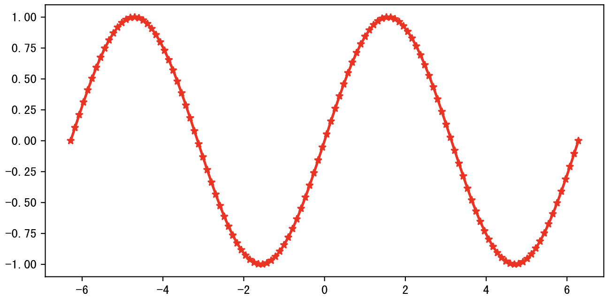
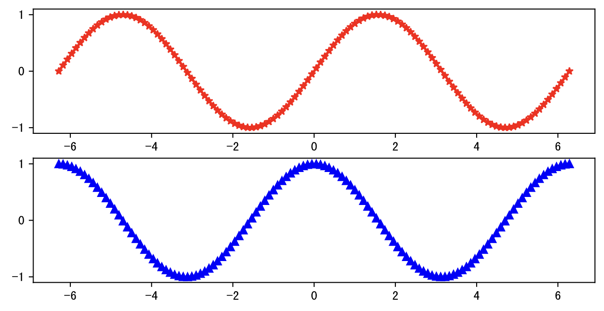
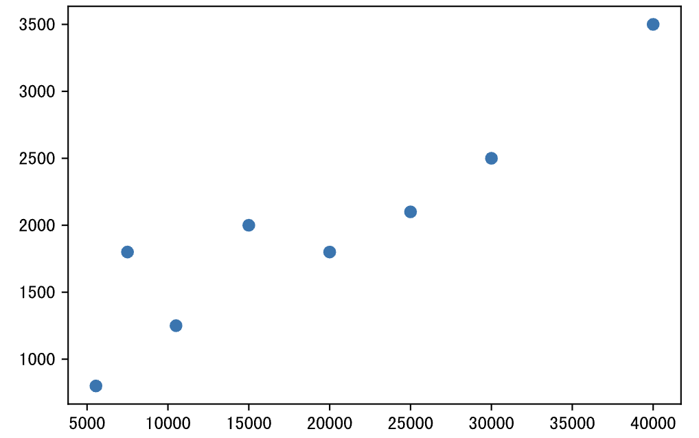
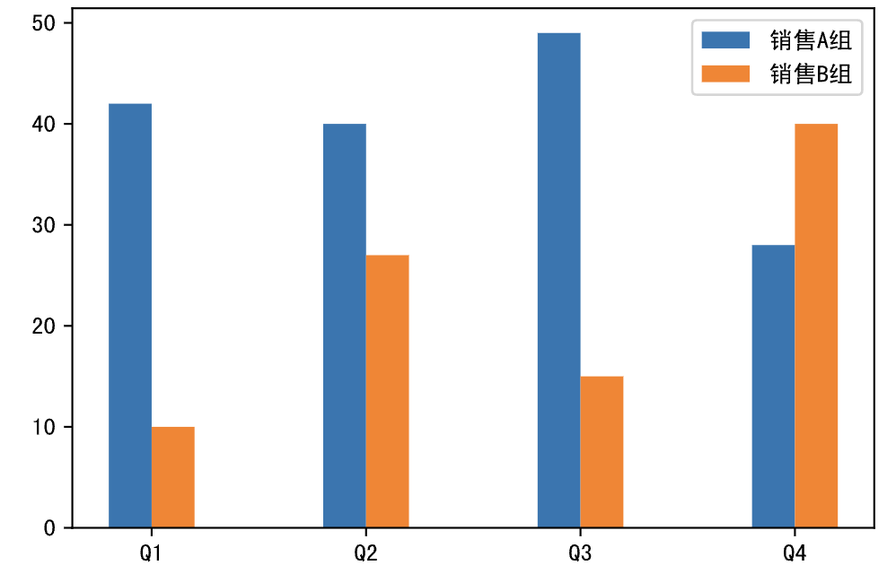
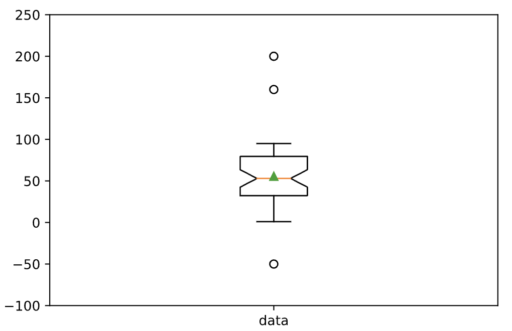

数据可视化-1
在完成了对数据的透视之后，我们可以将数据透视的结果通过可视化的方式呈现出来，简单的说，就是将数据变成漂亮的统计图表，因为人类对颜色和形状会更加敏感，然后再进一步解读数据背后隐藏的商业价值。在之前的课程中，我们已经为大家展示过用使用Series或DataFrame对象的plot方法生成可视化图表的操作，本章我们为大家讲解这个绘图方法的基石，它就是大名鼎鼎的 matplotlib 库。
在讲解 matplotlib 之前，请大家先看看下面这张图，它给出了常用的图表类型及其应用场景。我们在选择统计图表时，如果不知道做出怎样的选择最合适，相信这张图就能帮到你。简单的说，看趋势折线图，比数据柱状图，定关系散点图，查占比饼状图，看分布直方图，找离群箱线图。

导入和配置
之前的课程中，我们为大家讲解过如何安装和导入 matplotlib 库，如果不确定是否已经安装了 matplotlib，可以使用下面的魔法指令尝试安装或升级你的 matplotlib。
%pip install -U matplotlib
为了解决 matplotlib 图表中文显示的问题，我们需要修改pyplot模块的rcParams配置参数，具体的操作如下所示。
import matplotlib.pyplot as plt
plt.rcParams['font.sans-serif'].insert(0, 'SimHei')
plt.rcParams['axes.unicode_minus'] = False
说明：上面代码中的
SimHei是字体名称，大家可以通过百度云盘下载并安装该字体，链接地址：https://pan.baidu.com/s/1rQujl5RQn9R7PadB2Z5g_g?pwd=e7b4。你可以尝试安装其他的中文字体，安装之后如果不知道字体叫什么名字，可以到用户主目录下名为`.matplotlib`的文件夹中找到`fontlist-v330.json`文件，打开后可以看到字体文件的路径和字体的名称等信息。需要注意的是，使用中文字体后坐标轴上的负号将会无法显示，需要将`axes.unicode_minus`参数设置为`False`，这样才能让坐标轴上的负号正常显示。
通过下面的魔法指令，我们可以在绘图时生成矢量图（SVG - Scalable Vector Graphics），矢量图的特点是不会因为放大、缩小或旋转等操作而失真，看起来会舒服很多。
%config InlineBackend.figure_format='svg'
创建画布
pyplot模块的figure函数可以用来创建画布，创建画布时，可以通过figsize参数指定画布的尺寸（默认值是[6.4, 4.8]）；可以通过dpi参数设置绘图的分辨率，因为dpi代表了每英寸的像素点数量。除此之外，还可以通过facecolor参数设置画布的背景色。figure函数的返回值是一个Figure对象，它代表了绘图使用的画布，我们可以基于画布来创建绘图使用的坐标系。
plt.figure(figsize=(8, 4), dpi=120, facecolor='darkgray')
创建坐标系
可以直接使用pyplot模块的subplot函数来创建坐标系，该函数会返回Axes对象。subplot的前三个参数分别用来指定整个画布分成几行几列以及当前坐标系的索引，这三个参数的默认值都是1。如果没有创建坐标系，我们绘图时会使用画布上默认的也是唯一的一个坐标系；如果需要在画布上创建多个坐标系，就可以使用该函数。当然，我们也可以通过上面创建的Figure对象的add_subplot方法或add_axes方法来创建坐标系，前者跟subplot函数的作用一致，后者会产生嵌套的坐标系。
plt.subplot(2, 2, 1)
绘制图表
折线图
在绘图时，如果没有先调用figure函数和subplot函数，我们将使用默认的画布和坐标系，如果要绘制折线图，可以使用pyplot模块的plot函数，并指定横轴和纵轴的数据。折线图最适合用来观察数据的趋势，尤其是当横坐标代表时间的情况下。我们可以使用plot函数的color参数来定制折线的颜色，可以使用marker参数来定制数据点的标记（例如：*表示五角星，^表示三角形，o表示小圆圈等），可以使用linestyle参数来定制折线的样式（例如：-表示实线，--表示虚线，:表示点线等），可以使用linewidth参数来定制折线的粗细。 下面的代码绘制了一条正弦曲线，其中marker='*'会将数据点的标记设置为五角星形状，而color='red'会将折线绘制为红色。
代码：
import numpy as np
x = np.linspace(-2 * np.pi, 2 * np.pi, 120)
y = np.sin(x)
# 创建画布
plt.figure(figsize=(8, 4), dpi=120)
# 绘制折线图
plt.plot(x, y, linewidth=2, marker='*', color='red')
# 显示绘图
plt.show()
输出：

如果要在一个坐标系上同时绘制正弦和余弦曲线，可以对上面的代码稍作修改。
代码：
x = np.linspace(-2 * np.pi, 2 * np.pi, 120)
y1, y2 = np.sin(x), np.cos(x)
plt.figure(figsize=(8, 4), dpi=120)
plt.plot(x, y1, linewidth=2, marker='*', color='red')
plt.plot(x, y2, linewidth=2, marker='^', color='blue')
# 定制图表上的标注（annotate函数的参数如果不理解可以先不管它）
plt.annotate('sin(x)', xytext=(0.5, -0.75), xy=(0, -0.25), fontsize=12, arrowprops={
'arrowstyle': '->', 'color': 'darkgreen', 'connectionstyle': 'angle3, angleA=90, angleB=0'
})
plt.annotate('cos(x)', xytext=(-3, 0.75), xy=(-1.25, 0.5), fontsize=12, arrowprops={
'arrowstyle': '->', 'color': 'darkgreen', 'connectionstyle': 'arc3, rad=0.35'
})
plt.show()
输出：

如果要使用两个坐标系分别绘制正弦和余弦，可以用上面提到的subplot函数来创建坐标系，然后再绘图。
代码：
plt.figure(figsize=(8, 4), dpi=120)
# 创建坐标系（第1个图）
plt.subplot(2, 1, 1)
plt.plot(x, y1, linewidth=2, marker='*', color='red')
# 创建坐标系（第2个图）
plt.subplot(2, 1, 2)
plt.plot(x, y2, linewidth=2, marker='^', color='blue')
plt.show()
输出：

当然也可以像下面这么做，大家可以运行代码看看跟上面的图有什么区别。
plt.figure(figsize=(8, 4), dpi=120)
plt.subplot(1, 2, 1)
plt.plot(x, y1, linewidth=2, marker='*', color='red')
plt.subplot(1, 2, 2)
plt.plot(x, y2, linewidth=2, marker='^', color='blue')
plt.show()
然后，再试一试下面这个代码，看看运行效果如何。
fig = plt.figure(figsize=(10, 4), dpi=120)
plt.plot(x, y1, linewidth=2, marker='*', color='red')
# 用Figure对象的add_axes方法在现有坐标系中嵌套一个新的坐标系，该方法的参数是一个四元组，
# 代表了新坐标系在原坐标系中的位置，前两个值是左下角的位置，后两个值是坐标系的宽度和高度
ax = fig.add_axes((0.595, 0.6, 0.3,0.25))
ax.plot(x, y2, marker='^', color='blue')
ax = fig.add_axes((0.155, 0.2, 0.3,0.25))
ax.plot(x, y2, marker='^', color='green')
plt.show()
散点图
散点图可以帮助我们了解两个变量的关系，如果需要了解三个变量的关系，可以将散点图升级为气泡图。下面的代码中，x和y两个数组分别表示每个月的收入和每个月网购的支出，如果我们想了解x和y是否存在相关关系，就可以绘制如下所示的散点图。
代码：
x = np.array([5550, 7500, 10500, 15000, 20000, 25000, 30000, 40000])
y = np.array([800, 1800, 1250, 2000, 1800, 2100, 2500, 3500])
plt.figure(figsize=(6, 4), dpi=120)
plt.scatter(x, y)
plt.show()
输出：

柱状图
在对比数据的差异时，柱状图是非常棒的选择，我们可以使用pyplot模块的bar函数来生成柱状图，也可以使用barh函数来生成水平柱状图（也称为“条状图”）。我们先为柱状图准备一些数据，代码如下所示。
x = np.arange(4)
y1 = np.random.randint(20, 50, 4)
y2 = np.random.randint(10, 60, 4)
绘制柱状图的代码。
代码：
plt.figure(figsize=(6, 4), dpi=120)
# 通过横坐标的偏移，让两组数据对应的柱子分开，width参数控制柱子的粗细，label参数为柱子添加标签
plt.bar(x - 0.1, y1, width=0.2, label='销售A组')
plt.bar(x + 0.1, y2, width=0.2, label='销售B组')
# 定制横轴的刻度
plt.xticks(x, labels=['Q1', 'Q2', 'Q3', 'Q4'])
# 定制显示图例
plt.legend()
plt.show()
输出：

如果想绘制堆叠柱状图，可以对上面的代码稍作修改，如下所示。
代码：
labels = ['Q1', 'Q2', 'Q3', 'Q4']
plt.figure(figsize=(6, 4), dpi=120)
plt.bar(labels, y1, width=0.4, label='销售A组')
# 注意：堆叠柱状图的关键是将之前的柱子作为新柱子的底部，可以通过bottom参数指定底部数据，新柱子绘制在底部数据之上
plt.bar(labels, y2, width=0.4, bottom=y1, label='销售B组')
plt.legend(loc='lower right')
plt.show()
输出：

饼状图
饼状图通常简称为饼图，是一个将数据划分为几个扇形区域的统计图表，它主要用于描述数量、频率等之间的相对关系。在饼图中，每个扇形区域的大小就是其所表示的数量的比例，这些扇形区域合在一起刚好是一个完整的饼。在需要展示数据构成的场景下，饼状图、树状图和瀑布图是不错的选择，我们可以使用pyplot模块的pie函数来绘制饼图，代码如下所示。
代码：
data = np.random.randint(100, 500, 7)
labels = ['苹果', '香蕉', '桃子', '荔枝', '石榴', '山竹', '榴莲']
plt.figure(figsize=(5, 5), dpi=120)
plt.pie(
data,
# 自动显示百分比
autopct='%.1f%%',
# 饼图的半径
radius=1,
# 百分比到圆心的距离
pctdistance=0.8,
# 颜色（随机生成）
colors=np.random.rand(7, 3),
# 分离距离
# explode=[0.05, 0, 0.1, 0, 0, 0, 0],
# 阴影效果
# shadow=True,
# 字体属性
textprops=dict(fontsize=8, color='black'),
# 楔子属性（生成环状饼图的关键）
wedgeprops=dict(linewidth=1, width=0.35),
# 标签
labels=labels
)
# 定制图表的标题
plt.title('水果销售额占比')
plt.show()
输出：

说明：大家可以试一试将上面代码中被注释的部分恢复，看看有什么样的效果。
直方图
在统计学中，直方图是一种展示数据分布情况的图形，是一种二维统计图表，它的两个坐标分别是统计样本和该样本对应的某个属性的度量。下面的数据是某学校100名男学生的身高，如果我们想知道数据的分布，就可以使用直方图。
heights = np.array([
170, 163, 174, 164, 159, 168, 165, 171, 171, 167,
165, 161, 175, 170, 174, 170, 174, 170, 173, 173,
167, 169, 173, 153, 165, 169, 158, 166, 164, 173,
162, 171, 173, 171, 165, 152, 163, 170, 171, 163,
165, 166, 155, 155, 171, 161, 167, 172, 164, 155,
168, 171, 173, 169, 165, 162, 168, 177, 174, 178,
161, 180, 155, 155, 166, 175, 159, 169, 165, 174,
175, 160, 152, 168, 164, 175, 168, 183, 166, 166,
182, 174, 167, 168, 176, 170, 169, 173, 177, 168,
172, 159, 173, 185, 161, 170, 170, 184, 171, 172
])
可以使用pyplot模块的hist函数来绘制直方图，其中bins参数代表了我们使用的分箱方式（身高从150厘米到190厘米，每5厘米为一个分箱），代码如下所示。
代码：
plt.figure(figsize=(6, 4), dpi=120)
# 绘制直方图
plt.hist(heights, bins=np.arange(145, 196, 5), color='darkcyan')
# 定制横轴标签
plt.xlabel('身高')
# 定制纵轴标签
plt.ylabel('概率密度')
plt.show()
输出：
绘制直方图时，如果将hist函数的density参数修改为True，同时将cumulative参数也修改为True，那么一方面纵轴会显示为概率密度，而图表会绘制概率的累计分布，如下所示。
代码：
plt.figure(figsize=(6, 4), dpi=120)
# 绘制直方图
plt.hist(heights, bins=np.arange(145, 196, 5), color='darkcyan', density=True, cumulative=True)
# 定制横轴标签
plt.xlabel('身高')
# 定制纵轴标签
plt.ylabel('概率')
plt.show()
输出：
箱线图
箱线图又叫箱型图或盒须图，是一种用于展示一组数据分散情况的统计图表，如下所示。因图形如箱子，而且在上下四分位数之外有线条像胡须延伸出去而得名。在箱线图中，箱子的上边界是上四分位数（$Q_3$）的位置，箱子的下边界是下四分位数（$Q_1$）的位置，箱子中间的线条是中位数（$Q_2$）的位置，而箱子的长度就是四分位距离（IQR）。除此之外，箱子上方线条的边界是最大值，箱子下方线条的边界是最小值，这两条线之外的点就是离群值（outlier）。所谓离群值，是指数据小于$Q_1 - 1.5 \times IQR$或数据大于$Q_3 + 1.5 \times IQR$的值，公式中的1.5还可以替换为3来发现极端离群值（extreme outlier），而介于1.5到3之间的离群值通常称之为适度离群值（mild outlier）。
可以使用pyplot模块的boxplot函数来绘制箱线图，代码如下所示。
代码：
# 数组中有47个[0, 100)范围的随机数
data = np.random.randint(0, 100, 47)
# 向数组中添加三个可能是离群点的数据
data = np.append(data, 160)
data = np.append(data, 200)
data = np.append(data, -50)
plt.figure(figsize=(6, 4), dpi=120)
# whis参数的默认值是1.5，将其设置为3可以检测极端离群值，showmeans=True表示在图中标记均值的位置
plt.boxplot(data, whis=1.5, showmeans=True, notch=True)
# 定制纵轴的取值范围
plt.ylim([-100, 250])
# 定制横轴的刻度
plt.xticks([1], labels=['data'])
plt.show()
输出：

说明：由于数据是随机生成的，大家运行上面的代码生成的图表可能跟我这里并不相同，以实际运行结果为准。
显示和保存图表
可以使用pyplot模块的show函数来显示绘制的图表，我们在上面的代码中使用过这个函数。如果希望保存图表，可以使用savefig函数。需要注意的是，如果要同时显示和保存图表，应该先执行savefig函数，再执行show函数，因为在调用show函数时，图表已经被释放，位于show函数之后的savefig保存的只是一个空白的区域。
plt.savefig('chart.png')
plt.show()
其他图表
使用 matplotlib，我们还可以绘制出其他的统计图表（如：雷达图、玫瑰图、热力图等），但实际工作中，使用频率最高的几类图表我们在上面已经为大家完整的展示出来了。此外，matplotlib 还有很多对统计图表进行定制的细节，例如定制坐标轴、定制图表上的文字和标签等。如果想了解如何用 matplotlib 绘制和定制更多的统计图表，可以直接查看 matplotlib 官方网站上的文档和示例，在下一个章节我们会为大家做一个简要的介绍。